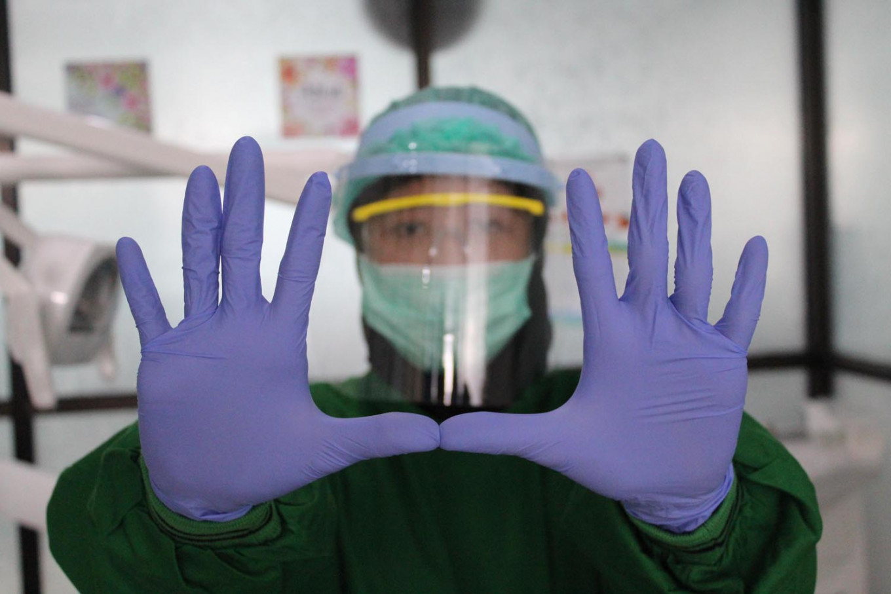

Front-Line Clinicians Share Lessons from Battling COVID-19

As the coronavirus pandemic enters a dangerous new phase, doctors and nurses fighting the disease search for hope while shouldering a heavy burden.
MAYRA RAMIREZ REMEMBERS listening to a news report in January about a novel coronavirus spreading across Wuhan, China. A world away in Chicago, Ramirez didn't worry too much about it until nearly two months later, when Illinois Gov. J.B. Pritzker issued a stay-at-home order, Ramirez said during a webinar hosted by U.S. News & World Report as part of its ongoing Healthcare of Tomorrow series.
The 28-year-old paralegal transitioned to working from home and avoided close contact with others, knowing that her autoimmune condition put her at high risk. Despite her efforts, she contracted the virus in April, and she went on to spend more than six weeks in an intensive care unit struggling to breathe. She was intubated soon after being admitted with an oxygen saturation reading of just 54%, she said, instead of a more typical figure above 90%.
Battling COVID-19: Protecting frontline workers is key to containing contagion
The persistent issue for Indonesian medical professionals is largely being portrayed at present as one of sourcing extra masks, goggles, hazmat suits and other personal protective equipment (PPE). But they face multiple complications that are rarely reported. Doctors and medical residents of all specialties are on the front lines in the COVID-19 pandemic, and we are not just in the emergency room, but also in outpatient clinics, general wards and labs, at reception, in offices, in the dispensary and almost every corner at all referral hospitals. Every time we arrive at the hospital, we are resolved to help patients, not only those with the coronavirus, but also all other people with illness or injury. The orthopedic residents are treating patients with broken legs, the pediatric oncology residents are providing chemotherapy treatment for child patients with cancer, and general practitioners are providing medical consultations and treatment while running triage, assigning varying degrees of urgency to patients.
COVID-19 claims life of doctor, IDI official
The recent death of Andrianto Purnawan, the head of the Indonesian Medical Association’s (IDI) public participation acceleration team for COVID-19 mitigation, adds to the rising number of medical personnel who have succumbed to the coronavirus. Andrianto died at the age of 38 last week at Dr. Soetomo Regional General Hospital (RSUD) in Surabaya, East Java, after being treated for about 15 days for COVID-19. Hailing from Malang, East Java, Andrianto’s last deployment was at RSUD Soeradji Tirtonegoro in Klaten, Central Java. “Please pray for and forgive Dr. Andrianto Purnawan,” IDI spokesperson Halik Malik said as quoted by antaranews.com on Thursday. Halik said Andrianto, who was active in the association’s COVID-19 task force, was also directly involved in collecting funds for protective health equipment from various parties and promoting coronavirus prevention efforts through writing and online discussions.